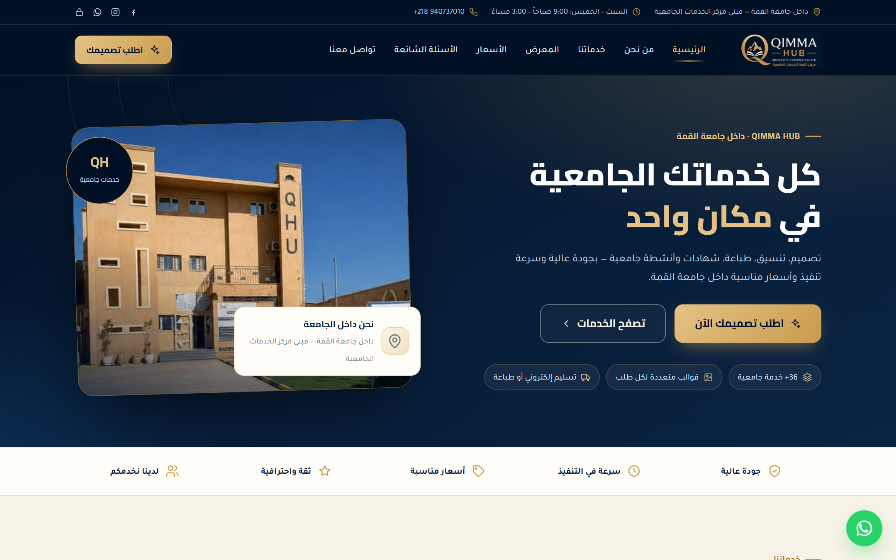
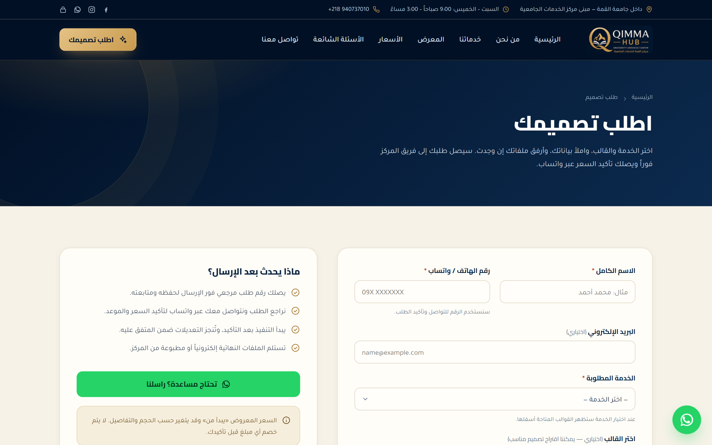
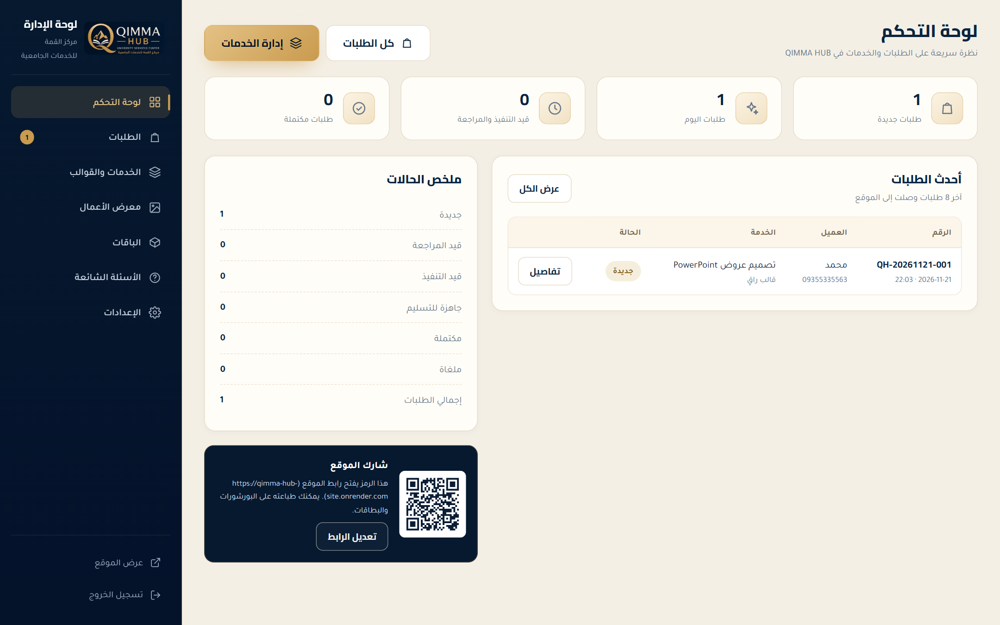

مركز القمة للخدمات الجامعية — جامعة القمة
موقع QIMMA HUB
دليلك الكامل… بلغة بسيطة
ما هو الموقع؟ ماذا يفعل؟ كيف يستخدمه العميل؟ وكيف تديره أنت؟
كل ذلك في دليل واحد مرتّب، بدون مصطلحات معقّدة.
واجهة رسمية للمركز
طلب إلكتروني + مرفقات
متابعة برقم الطلب
لوحة إدارة كاملة
يعمل على الهاتف
رابط الموقع
qimma-hub-site.onrender.com
قبل أن تبدأ: هذه الصفحة تكفي
QIMMA HUB موقع إلكتروني عربي تابع لمركز القمة للخدمات الجامعية. يعرض خدمات المركز وقوالبه وأسعاره،
ويستقبل طلبات العملاء مع ملفاتهم، ويعطي كل عميل رقم طلب يتابع به حالته. وفي المقابل، تملك أنت لوحة إدارة
تعدّل منها كل شيء: الخدمات، الصور، الأسعار، الأسئلة، بيانات التواصل، وتدير الطلبات حتى التسليم.
محتويات الدليل
- ما هو الموقع ولماذا وُجد؟
- صفحات الموقع والرابط
- رحلة الطلب خطوة بخطوة
- لوحة الإدارة: كل ما تستطيع فعله
- الموقع على الهاتف ورمز QR
- خلف الكواليس: كيف يعمل الموقع؟
- الأمان والخصوصية ببساطة
- أرقام سريعة عن المشروع
- كيف يُحدَّث الموقع؟
- أسئلة عامة سريعة
- ما تم إنجازه… وما لم يُنجَز بعد
- خلاصة وبيانات التواصل
1 ما هو الموقع ولماذا وُجد؟
ببساطة: هو واجهة رسمية للمركز + استقبال طلبات منظّم + متابعة واضحة + لوحة تحكم.
المشكلة قبل الموقع
- العميل يسأل عن الخدمات والأسعار في محادثات متفرقة، وكل مرة يُعاد الشرح.
- الملفات تُرسل في تطبيقات مختلفة، وتضيع بين المحادثات.
- لا يوجد رقم موحّد لكل طلب، ولا طريقة واضحة لمعرفة «وصل إلى وين».
- المركز لا يملك واجهة رسمية تُظهر أعماله وقوالبه وتُعطي انطباعاً احترافياً.
الحل الذي يقدّمه QIMMA HUB
للعميل
- يتصفح 35 خدمة داخل 5 أقسام، مع السعر ومدة التنفيذ.
- يختار قالباً جاهزاً ويشاهد صورته قبل الطلب.
- يرسل الطلب ومعه ملفه من نفس الصفحة.
- يستلم رقم طلب ويتابع به الحالة حتى التسليم.
للمركز
- كل الطلبات في مكان واحد بدل المحادثات المتفرقة.
- تعديل الخدمات والأسعار والصور في أي وقت من الهاتف.
- تحديد السعر النهائي وحالة الطلب وملاحظة داخلية.
- زر واتساب جاهز برسالة تحتوي ملخص الطلب.
الجملة التي تلخّص المشروع
«الموقع لا يبيع الخدمة بدلاً من المركز، بل ينظّم الطريق إليها: يعرض، يستقبل، يحفظ، يتابع، ويُدير —
والتنفيذ البشري يبقى عند المركز.»
2 صفحات الموقع والرابط
كل شيء يعمل من المتصفح، ومن أي جهاز، وبدون تثبيت أي برنامج:
| الصفحة | الوظيفة | الرابط |
|---|
| الرئيسية | تعريف بالمركز، الخدمات، الباقات، آخر الأعمال، ووسائل التواصل. | / |
| الخدمات | الأقسام الخمسة وكل خدمة مع سعرها ومدة تنفيذها. | /services |
| صفحة الخدمة | تفاصيل الخدمة وقوالبها الثلاثة وزر الطلب. | /services/{slug} |
| معرض الأعمال | نماذج من أعمال المركز (قابلة للتحديث من الإدارة). | /gallery |
| الأسعار | الأسعار والباقات في صفحة واحدة. | /pricing |
| اطلب تصميمك | نموذج الطلب: الخدمة، القالب، الكمية، الموعد، الملاحظات، والمرفق. | /order |
| تتبع الطلب | إدخال رقم الطلب لمعرفة الحالة والسعر والملاحظات. | /track |
| الأسئلة الشائعة | 8 أسئلة جاهزة تقلّل الاستفسارات المتكررة. | /faq |
| تواصل معنا | الهاتف، واتساب، البريد، العنوان، وساعات العمل. | /contact |
| من نحن | نبذة عن المركز. | /about |
| لوحة الإدارة | محمية بكلمة مرور — لإدارة كل المحتوى والطلبات. | /admin |
الرابط الرسمي
https://qimma-hub-site.onrender.com
ويعمل نفس الرابط من الكمبيوتر والهاتف. لا يحتاج الزائر إلى إنشاء حساب أو تحميل تطبيق.

الصفحة الرئيسية للموقع — نسخة سطح المكتب.
3 رحلة الطلب خطوة بخطوة
هذه هي الرحلة الكاملة من لحظة دخول العميل إلى لحظة تسليم الطلب:
1
يتصفح ويختاريدخل من الرابط أو QR، يتصفح الأقسام والخدمات ويعرف «السعر يبدأ من» ومدة التنفيذ.
2
يختار قالباًلكل خدمة ثلاثة قوالب افتراضية بصور توضيحية، ويستطيع رؤية القالب قبل الطلب.
3
يحدّد التفاصيلالكمية، الموعد المطلوب، وملاحظات يشرح فيها ما يريده بالضبط.
4
يرفق ملفهPDF أو Word أو PowerPoint أو صورة أو ZIP، بحد أقصى 15 ميجابايت — اختياري.
5
يرسل الطلبيظهر له رقم مرجعي مثل QH-20261121-001، ويُحفظ الطلب فوراً في قاعدة البيانات.
6
يتابع بنفسهمن صفحة «تتبع الطلب» يكتب الرقم فيرى الحالة والسعر المعتمد وملاحظات المركز.
7
الإدارة تراجع وتتواصليظهر الطلب في لوحة الإدارة، ويُحدَّد السعر النهائي، ويُفتح واتساب برسالة ملخص جاهزة.
8
التنفيذ ثم التسليمتتغير الحالة: قيد التنفيذ ← جاهزة للتسليم ← مكتملة، والعميل يرى التحديث من صفحة التتبع.

صفحة الطلب: الخدمة، القالب، البيانات، والمرفق.
حالات الطلب الست
جديدة · قيد المراجعة · قيد التنفيذ · جاهزة للتسليم · مكتملة · ملغاة.
نقطة مهمة عن السعر
السعر الظاهر في الموقع هو «يبدأ من»، لأن السعر النهائي يعتمد على التفاصيل والكمية.
السعر المعتمد يُسجّله المركز في لوحة الإدارة، ويظهر للعميل في صفحة التتبع.
لماذا رقم مرجعي؟
ليكون لكل طلب هوية واضحة في المحادثات والملفات، بدل «الطلب اللي أرسلته أمس».
4 لوحة الإدارة: كل ما تستطيع فعله
لوحة الإدارة هي «غرفة التحكم». تدخل إليها من /admin باسم مستخدم وكلمة مرور، وكل شيء فيها يعمل من الهاتف أيضاً.
| القسم | ماذا تفعل فيه؟ |
|---|
| لوحة التحكم | إحصاءات سريعة (جديدة، اليوم، قيد التنفيذ، مكتملة)، آخر 8 طلبات، ملخص الحالات، ورمز QR للموقع. |
| الطلبات | تصفية حسب الحالة، فتح الطلب، تغيير الحالة، تحديد السعر النهائي، ملاحظة داخلية، فتح المرفق، واتساب مباشر، وتصدير كل الطلبات إلى Excel/CSV. |
| الخدمات والقوالب | إضافة خدمة أو تعديلها أو إخفاؤها أو حذفها. تعديل السعر ومدة التنفيذ والوصف. إضافة قوالب لكل خدمة ورفع صور حقيقية لها. |
| معرض الأعمال | إضافة أعمال جديدة، تعديلها، أو إخفاؤها. الصور تُرفع من الهاتف مباشرة. |
| الباقات | تعديل الباقات الثلاث، أسعارها، وميزاتها، وإظهار «الأكثر طلباً». |
| الأسئلة الشائعة | إضافة/تعديل/حذف الأسئلة، وترتيب ظهورها. |
| الإعدادات | اسم المركز، رقم واتساب، الهاتف، البريد، العنوان، ساعات العمل، روابط التواصل، العملة، رابط الموقع (الذي يعتمد عليه QR)، وكلمة مرور الإدارة. |

لوحة الإدارة على الكمبيوتر.
نفس اللوحة على شاشة 390px.
على الهاتف
قائمة التنقل أصبحت زر ☰ أعلى الصفحة، وتفتح كل الأقسام. الجداول تُمرَّر داخل حدودها بدل ما تخرج عن الشاشة.
ما لا تحتاج إلى مبرمج لتغييره
الأسعار، الخدمات، القوالب، الصور، الباقات، الأسئلة، النصوص، بيانات التواصل، أوقات العمل، وكلمة المرور — كلها من اللوحة.
5 الموقع على الهاتف ورمز QR
كيف يفتحه أي شخص؟
- يفتح كاميرا الهاتف ويوجّهها إلى رمز QR الموجود على البورشور أو البطاقة.
- أو يكتب الرابط مباشرة في المتصفح.
- يتصفح ويطلب بدون تثبيت أي تطبيق.
الرمز موجود في مكانين
ملف «رمز-QR.png» على سطح المكتب، وأيضاً من صفحة الإدارة (لوحة التحكم). ويُحدَّث تلقائياً إذا تغيّر «رابط الموقع» في الإعدادات.

امسح وافتح فوراً
الرمز يشير إلى رابط الموقع الرسمي المنشور.
ملاحظة كمية واحدة قد تحتاجها
الاستضافة حالياً على الخطة المجانية من Render. إذا لم يدخل أحد الموقع لمدة 15 دقيقة، يتوقف الخادم مؤقتاً،
وأول زيارة بعده تستغرق من 30 إلى 60 ثانية ثم يعود طبيعياً. هذا سلوك طبيعي في الخطة المجانية وليس عطلاً.
ماذا يعني ذلك عملياً؟
قبل عرض الموقع أمام لجنة أو عميل، افتحه مرة واحدة قبل الموعد بدقيقة. وإن احتجت لاحقاً استجابة فورية على مدار الساعة،
توجد خيارات: خدمة تنبيه دوري (UptimeRobot) أو ترقية الخطة إلى Starter.
6 خلف الكواليس: كيف يعمل الموقع؟
لا حاجة لفهم التفاصيل التقنية، لكن هذه الصورة تشرح أين تذهب البيانات:
المتصفحكمبيوتر أو هاتف
←
Renderيشغّل الموقع (FastAPI)
←
Supabaseقاعدة بيانات PostgreSQL + ملفات
GitHubالكود المصدري
←
نشر تلقائيأي تحديث يصل GitHub يُنشر على Render خلال دقائق
| المكوّن | وظيفته بلغة بسيطة |
|---|
| FastAPI (Python) | عقل الموقع: يستقبل الطلبات ويعرض الصفحات ويتحقق من البيانات. |
| Jinja2 | القوالب التي تُنتج صفحات الموقع بلغة عربية واتجاه صحيح. |
| PostgreSQL على Supabase | الخزانة المنظّمة: الخدمات، القوالب، الطلبات، الباقات، الأسئلة، الإعدادات. |
| Supabase Storage | خزنة الملفات: حاوية عامة لصور الموقع، وحاوية خاصة لمرفقات العملاء. |
| Render | الخادم المنشور على الإنترنت، يعمل دون الحاجة لجهازك. |
| GitHub | نسخة الكود + النشر التلقائي عند أي تعديل. |
لماذا هذا مهم؟
- لو أُعيد تشغيل الخادم أو نُشر تحديث، الطلبات لا تضيع لأنها في قاعدة بيانات خارج الخادم.
- لو فتحت الموقع من جهاز آخر، ترى نفس المحتوى ونفس الطلبات.
- حتى لو توقف الموقع مؤقتاً، البيانات تبقى محفوظة في Supabase.
7 الأمان والخصوصية ببساطة
هذه الإجراءات موجودة فعلياً في الموقع، وليست وعوداً:
كلمة مرور الإدارة
لا تُحفظ كنص. تُحفظ كبصمة مشفّرة بخوارزمية PBKDF2-SHA256 مع «ملح» عشوائي، ولا يمكن استخراج الكلمة الأصلية منها.
حماية الدخول
جلسة الدخول تنتهي بعد 12 ساعة، وبعد 8 محاولات خاطئة تتوقف المحاولات مؤقتاً. لا توجد صفحة إدارة مفتوحة للعامة.
مرفقات العملاء خاصة
تُخزَّن في حاوية غير عامة، ولا تُفتح إلا من لوحة الإدارة عبر رابط مؤقت صالح ساعة واحدة.
حماية المدخلات
استعلامات قاعدة البيانات آمنة ضد حقن SQL، والنصوص تُهرب تلقائياً لمنع حقن السكربتات (XSS)، مع فحص للطلبات القادمة من نطاقات أخرى.
فخ السبام
حقل مخفي لا يراه الإنسان؛ إذا امتلأ يُرفض الطلب تلقائياً. مع تحقق من الاسم والهاتف والبريد ونوع الملف وحجمه.
اتصال مشفّر
الموقع يعمل عبر HTTPS، والاتصال بـ Supabase مشفّر أيضاً. كلمات المرور والمفاتيح ليست داخل الكود المنشور.
حدود موجودة، ونذكرها بصراحة
حالياً لا يوجد تحقق بخطوتين (2FA)، ولا كابتشا، ولا سجل تدقيق لكل عملية، وتتبع الطلب يعتمد على رقم الطلب.
هذه نقاط معروفة ومدرجة في خطة التطوير (انظر القسم 11)، وليست مخفية.
8 أرقام سريعة عن المشروع
5أقسام رئيسية
35خدمة جاهزة
105قالب تصميم
9أعمال في المعرض
3باقات
8أسئلة شائعة
6حالات للطلب
15MBحد المرفق
ماذا يعني «105 قوالب»؟
لكل خدمة من الخدمات الـ35 ثلاثة قوالب افتراضية على الأقل (35 × 3 = 105)، ولكل قالب صورة توضيحية.
يمكنك إضافة قوالب أكثر أو رفع صور حقيقية بدل النماذج التوضيحية من لوحة الإدارة.
ما أنواع الملفات المسموحة؟
PDF · PNG · JPG · WEBP · DOC · DOCX · PPT · PPTX · ZIP · RAR — بحد أقصى 15 ميجابايت للملف.
الأقسام الخمسة
| القسم | أمثلة |
|---|
| الخدمات الطلابية | عروض تقديمية، أغلفة بحوث، تنسيق مشاريع، ملخصات، خرائط ذهنية… |
| الأنشطة الجامعية | بوسترات فعاليات، شهادات، دعوات، تغطية إعلامية… |
| الرقمية والتصميمية | هوية بصرية، سوشيال ميديا، فيديو، تصاميم رقمية… |
| الطباعة والتجهيز | طباعة ملونات، تجليد، بطاقات، مطبوعات… |
| المؤسسات وهيئة التدريس | هوية أكاديمية، سيرة ذاتية، عروض علمية، مطبوعات… |
9 كيف يُحدَّث الموقع؟
تعديل المحتوى (أنت)
من لوحة الإدارة مباشرة. الحفظ فوري، ويظهر للزوار مباشرة. لا حاجة لأي نشر أو مبرمج.
تعديل التصميم أو الكود (مطوّر)
دفعة (push) إلى GitHub ← Render ينشر تلقائياً خلال 1–3 دقائق ← الموقع يتحدّث.
1
تعديل واختباريُجرَّب التعديل محلياً على الكمبيوتر قبل رفعه.
2
رفع إلى GitHubإلى فرع main. لا مفاتيح ولا كلمات مرور داخل المستودع.
3
نشر تلقائيRender يبدأ النشر من نفسه (trigger=new_commit) ويصل إلى live — تم التحقق من ذلك عملياً.
مهم للعرض أمام اللجنة
إذا طُلبت إضافة أو تعديل أثناء المناقشة، يمكن تنفيذها ورفعها ثم تحديث الصفحة بعد دقائق — دون إعادة تسليم أو تثبيت شيء.
10 أسئلة عامة سريعة
هل يحتاج تثبيت برنامج؟
لا. يفتح من أي متصفح على الكمبيوتر أو الهاتف.
هل يعمل بدون إنترنت؟
لا. الموقع منشور على الإنترنت، ويحتاج اتصالاً لفتحه وإرسال الطلبات. أما الإدارة فتحتاج إنترنت أيضاً.
هل يستطيع العميل الطلب بدون حساب؟
نعم. لا يوجد تسجيل ولا كلمات مرور للعملاء؛ فقط الاسم ورقم الهاتف (والبريد اختياري).
من يرى طلبي ومرفقاتي؟
إدارة المركز فقط. والمرفق لا يكون له رابط عام؛ يُفتح من لوحة الإدارة برابط مؤقت.
هل يوجد دفع إلكتروني؟
لا حالياً. الدفع والتنسيق يتمان مع المركز مباشرة، والسعر النهائي يُعتمد ويظهر في صفحة تتبع الطلب.
هل يعمل على iPhone وAndroid؟
نعم، وتم فحص الصفحات ولوحة الإدارة على عروض شاشة 360 و390 و412 بكسل، وعلى سطح المكتب 1280.
ماذا لو نسي العميل رقم طلبه؟
يتواصل مع المركز عبر واتساب أو الهاتف، ويُبحث عن طلبه بالاسم أو رقم الهاتف.
هل يمكن تغيير رابط الموقع أو العملة؟
نعم من الإعدادات. تغيير الرابط يحدّث رمز QR تلقائياً، لكنه يتطلب إعادة نشر إن تغيّر النطاق فعلياً.
11 ما تم إنجازه… وما لم يُنجَز بعد
منجز ومُختبَر فعلياً
✓
موقع عربي RTL كامل و35 خدمة و105 قوالب.
✓
طلب إلكتروني مع مرفقات ومكافحة سبام وتحقق من المدخلات.
✓
تتبع الطلب برقم مرجعي و6 حالات.
✓
لوحة إدارة كاملة لكل المحتوى + تصدير CSV.
✓
قاعدة بيانات سحابية PostgreSQL وتخزين ملفات خاص.
✓
نشر على الرابط العام + HTTPS + نشر تلقائي من GitHub.
✓
QR صحيح + دليل استخدام + نسخة احتياطية محلية من الكود.
✓
إصلاح تجاوب الهاتف للموقع ولوحة الإدارة والتحقق على أجهزة المحاكاة.
حدود حالية بصراحة
—
لا يوجد دفع إلكتروني أو بوابة دفع.
—
لا إشعارات تلقائية بالبريد أو SMS؛ التواصل عبر واتساب يدوياً.
—
حساب إدارة واحد فقط، بدون أدوار لعدة موظفين.
—
تتبع الطلب يعتمد على رقم الطلب فقط.
—
لا تحقق بخطوتين (2FA) ولا سجل تدقيق.
—
لا نسخ احتياطي آلي مجدول (يمكن التصدير يدوياً).
—
الاستضافة المجانية تنام بعد 15 دقيقة خمول.
—
الموقع عربي فقط، ولا يوجد تطبيق جوال مستقل.
خطة التطوير القادمة
- إضافة إشعار واتساب/بريد تلقائي عند وصول طلب أو تغيّر حالته.
- تأمين تتبع الطلب برقم الهاتف أو رمز تحقق قصير (OTP) بدل الرقم وحده.
- تعدد مستخدمي الإدارة بأدوار (مدير/موظف) وسجل تدقيق.
- كابتشا أو تحديد محاولات إرسال الطلبات، وتحقق بخطوتين للإدارة.
- نسخ احتياطي دوري مجدول، وترقية الاستضافة عند الحاجة.
- تسجيل الدفع الإلكتروني إذا توفرت بوابة مناسبة للسوق الليبي.
12 خلاصة وبيانات التواصل
QIMMA HUB ليس مجرد صفحة تعريفية؛ هو نظام صغير متكامل: واجهة للعميل، استقبال طلبات، قاعدة بيانات سحابية،
متابعة، ولوحة إدارة — منشور على الإنترنت ويعمل الآن.
الموقع
qimma-hub-site.onrender.com
تتبع الطلب
qimma-hub-site.onrender.com/track
لوحة الإدارة
qimma-hub-site.onrender.com/admin
بيانات المركز
| الاسم | مركز القمة للخدمات الجامعية — QIMMA HUB |
|---|
| الموقع | داخل جامعة القمة — مبنى مركز الخدمات الجامعية |
|---|
| واتساب / هاتف | +218 94 073 7010 |
|---|
| البريد | qimma.hub@uni.edu.ly |
|---|
| ساعات العمل | السبت – الخميس: 9:00 صباحاً – 3:00 مساءً |
|---|
جملة أخيرة
«كل خدمة في مكان واحد، وكل طلب له رقم، وكل تحديث يصل للعميل — هذا هو الفرق.»
أُعدّ هذا الدليل لشرح الموقع كما هو منشور فعلياً بتاريخ 2026-11-22. أي تعديل لاحق على المحتوى من لوحة الإدارة
لا يغيّر طريقة العمل الموضحة هنا. للحصول على نسخة PDF محدّثة أو تعديل في الصياغة، يُرجى الرجوع إلى مسؤول المشروع.